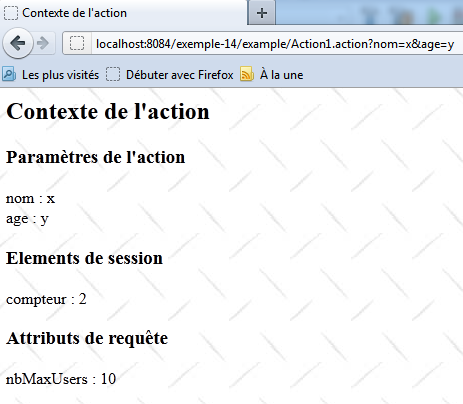

17. Exemplo 15 – Integração Struts 2 / Spring
No exemplo anterior, não tínhamos dados com escopo Application compartilhados por todas as solicitações de todos os usuários. Mostramos um exemplo disso aqui. Para implementá-lo, utilizamos o framework Spring [http://www.springsource.org/]. O Spring é uma ferramenta de grande valor. Neste exemplo, mostramos apenas uma pequena parte dele. Um exemplo posterior o utilizará de forma mais intensiva.
O objetivo deste aplicativo é exibir os dados da série Application.
17.1. O projeto NetBeans
O projeto NetBeans do aplicativo é o seguinte:
 |
- em [1]:
- [web.xml], que configura a aplicação web, sofrerá alterações em relação ao que era nas versões anteriores
- [applicationContext.xml] é o arquivo de configuração do Spring
- em [2]: a visualização [Context.JSP], que exibirá os dados do escopo Application
- em [3]:
- o arquivo de mensagens [messages.properties]
- o arquivo de configuração principal do Struts [struts.xml]. Ele será adaptado em relação às aplicações anteriores.
- em [4]:
- a ação Struts [Action1.java]
- a classe [Config.java], que armazenará os dados no escopo da aplicação
- o arquivo de configuração secundário do Struts [example.xml]
- em [5]: a biblioteca do Struts 2
- em [6]:
- os arquivos necessários para o Spring [spring-core, spring-context, spring-beans, spring-web, commons-logging]
- o arquivo do plugin do Spring para o Struts 2. Permite a integração do Spring com o Struts 2 [struts2-spring-plugin]
Em relação às versões anteriores:
- é necessário adicionar arquivos ao projeto
- modificar os arquivos [web.xml] e [struts.xml]
17.2. Configuration
17.2.1. O arquivo [web.xml]
O arquivo [web.xml] sofre as seguintes alterações:
<?xml version="1.0" encoding="UTF-8"?>
<web-app id="WebApp_9" version="2.4" xmlns="http://java.sun.com/xml/ns/j2ee" xmlns:xsi="http://www.w3.org/2001/XMLSchema-instance" xsi:schemaLocation="http://java.sun.com/xml/ns/j2ee http://java.sun.com/xml/ns/j2ee/web-app_2_4.xsd">
<display-name>Exemple 14</display-name>
<filter>
<filter-name>struts2</filter-name>
<filter-class>org.apache.struts2.dispatcher.FilterDispatcher</filter-class>
</filter>
<filter-mapping>
<filter-name>struts2</filter-name>
<URL-pattern>/*</padrão-URL>
</filter-mapping>
<listener>
<listener-class>org.springframework.web.context.ContextLoaderListener</listener-class>
</listener>
</web-app>
A modificação ocorre nas linhas 12 a 14. Um listener é adicionado ao aplicativo web. Quando o aplicativo web for iniciado, a classe que implementa esse listener será instanciada. Trata-se de uma classe do Spring. Essa classe utilizará o arquivo [WEB-INF/applicationContext.xml]. Este é o seguinte:
<?xml version="1.0" encoding="UTF-8"?>
<beans xmlns="http://www.springframework.org/schema/beans" xmlns:xsi="http://www.w3.org/2001/XMLSchema-instance"
xmlns:tx="http://www.springframework.org/schema/tx"
xsi:schemaLocation="http://www.springframework.org/schema/beans http://www.springframework.org/schema/beans/spring-beans-2.0.xsd http://www.springframework.org/schema/tx http://www.springframework.org/schema/tx/spring-tx-2.0.xsd">
<!-- configuração dos beans de escopo de aplicação -->
<bean id="config" class="example.Config" >
<property name="nbMaxUsers" value="10"/>
</bean>
</beans>
- o arquivo de configuração do Spring tem a tag raiz <beans> (linhas 2 e 11). Poderíamos traduzir beans como “objetos”. O Spring instanciará todos os objetos (bean) encontrados nesse arquivo de configuração. Ele faz isso apenas uma vez, quando o Spring é iniciado ao inicializar a aplicação web.
- linhas 7-9: definem um bean chamado config (id). O bean config está associado à classe (class) [example.Config]. O Spring irá instanciar essa classe.
- linha 8: define uma propriedade da classe [example.Config]. O Spring chamará o método [example.Config].setNbMaxUsers(10). Portanto, é necessário que o método setNbMaxUsers exista na classe. Ele é o seguinte:
package example;
public class Config {
private int nbMaxUsers;
public int getNbMaxUsers() {
return nbMaxUsers;
}
public void setNbMaxUsers(int nbMaxUsers) {
this.nbMaxUsers = nbMaxUsers;
}
}
Essa classe define apenas um campo nbMaxUsers com seus get e set. Se você acompanhou bem o que foi explicado, ao iniciar o aplicativo web, uma instância da classe [Config] é instanciada com o valor 10 para seu campo nbMaxUsers. Definimos apenas um único campo, mas isso é suficiente para nossa demonstração. Queremos mostrar que esse campo, que poderia representar o número máximo de usuários, é um dado de escopo Application acessível a todas as ações. É isso que demonstraremos com a ação [Action1].
17.2.2. O arquivo [struts.xml]
O arquivo de configuração principal do Struts é o seguinte:
<?xml version="1.0" encoding="UTF-8" ?>
<!DOCTYPE struts PUBLIC
"-//Apache Software Foundation//DTD Struts Configuration 2.0//EN"
"http://struts.apache.org/dtds/struts-2.0.dtd">
<struts>
<!-- internacionalização -->
<constant name="struts.custom.i18n.resources" value="messages" />
<!-- integração com o Spring -->
<constant name="struts.objectFactory.spring.autoWire" value="name" />
<include file="example/example.xml"/>
<package name="default" namespace="/" extends="struts-default">
<default-action-ref name="index" />
<action name="index">
<result type="redirectAction">
<param name="actionName">Action1</param>
<param name="namespace">/example</param>
</result>
</action>
</package>
</struts>
Apenas a linha 10 difere das versões anteriores desse arquivo. Ela define uma constante do Struts. Os objetos instanciados pelo Spring podem ser injetados em outros objetos. Esse é o próprio fundamento do Spring. Aqui, uma referência ao objeto do tipo [Config], criado pelo Spring, poderá ser injetada em objetos Struts. É aí que entra o plugin do Spring para o Struts 2, que garante a integração do Spring com o Struts.
A linha 10 indica que a injeção de objetos Spring em um objeto Struts ocorrerá automaticamente (autowire) por nome (value). Voltemos ao arquivo de configuração [applicationContext.xml]:
<!-- configuração de beans com escopo de aplicação -->
<bean id="config" class="example.Config" >
<property name="nbMaxUsers" value="10"/>
</bean>
O que o Struts 2 chama de nome do bean é, na verdade, o id. Portanto, neste caso, o bean do tipo [Config] instanciado tem como nome config.
A ação [Action1.java] é a seguinte:
package example;
import com.opensymphony.xwork2.ActionSupport;
...
public class Action1 extends ActionSupport implements SessionAware, RequestAware, ParameterAware {
// construtor sem parâmetros
public Action1() {
}
// Sessão, Solicitação, Parâmetros
private Map<String, Object> session;
private Map<String, Object> request;
private Map<String, String[]> parameters;
private Config config;
@Override
public String execute() {
....
// solicitação
request.put("nbMaxUsers", config.getNbMaxUsers());
// exibição da página JSP
return SUCCESS;
}
...
public Config getConfig() {
return config;
}
public void setConfig(Config config) {
this.config = config;
}
}
A ação [Action1] é idêntica à da aplicação anterior, com as seguintes diferenças:
- linha 15: foi adicionado um campo config. Como ele tem o nome de um bean instanciado pelo Spring, esse campo receberá automaticamente uma referência a esse objeto. Assim, a ação tem acesso à configuração da aplicação ou, de maneira mais geral, aos dados do escopo Application.
- linha 31: o Spring instanciará o campo config por meio de seu método set. Portanto, ele deve estar presente.
- linha 21: a ação acessa as informações do escopo Application. Colocamos o número máximo de usuários nbMaxUsers na consulta para que a visualização [Context.JSP] possa exibi-lo.
17.2.3. O arquivo [example.xml]
O arquivo secundário de configuração do Struts é idêntico ao da versão anterior:
<?xml version="1.0" encoding="UTF-8" ?>
<!DOCTYPE struts PUBLIC
"-//Apache Software Foundation//DTD Struts Configuration 2.0//EN"
"http://struts.apache.org/dtds/struts-2.0.dtd">
<struts>
<package name="example" namespace="/example" extends="struts-default">
<action name="Action1" class="example.Action1">
<result name="success">/example/Context.JSP</result>
</action>
</package>
</struts>
17.3. A visualização [Context.JSP]
A visualização [Context.JSP] é a seguinte:
<%@ page contentType="text/html; charset=UTF-8" pageEncoding="UTF-8"%>
<%@ taglib prefix="s" uri="/struts-tags" %>
<html>
<head>
<title><s:text name="Context.titre"/></title>
<s:head/>
</head>
<body background="<s:url value="/ressources/standard.jpg"/>">
<h2><s:text name="Context.message"/></h2>
<h3><s:text name="Context.parameters"/></h3>
nom : <s:property value="#parameters['nom']"/><br/>
age : <s:property value="#parameters['age']"/>
<h3><s:text name="Context.session"/></h3>
compteur : <s:property value="#session['compteur']"/>
<h3><s:text name="Context.request"/></h3>
nbMaxUsers : <s:property value="#request['nbMaxUsers']"/>
</body>
</html>
17.4. Os testes
Um exemplo de execução é o seguinte:
 |